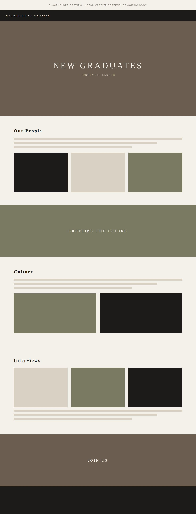

Overview
The existing recruitment website worked as an information portal, but it did not feel like Louis Vuitton. I led its redevelopment from concept to launch, turning a functional page into a branded platform that communicates the Maison's culture, people and career opportunities.
